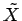

Inhalt Index DeskTop Bronstein

 Wahrscheinlichkeitsrechnung und Mathematische Statistik Mathematische Statistik Stichprobenfunktionen Stichprobenfunktionen
Wahrscheinlichkeitsrechnung und Mathematische Statistik Mathematische Statistik Stichprobenfunktionen Stichprobenfunktionen


Sind n Elemente einer Stichprobe der Größe nach geordnet, so heißt Median  im Falle n ungerade der an -ter Stelle stehende Wert, im Falle n gerade der Mittelwert aus den an -ter und -ter Stelle stehenden Werten.
Im konkreten Fall lautet der Median  zur Stichprobe , deren Elemente der Größe nach geordnet sind
zur Stichprobe , deren Elemente der Größe nach geordnet sind
| (16.126) |